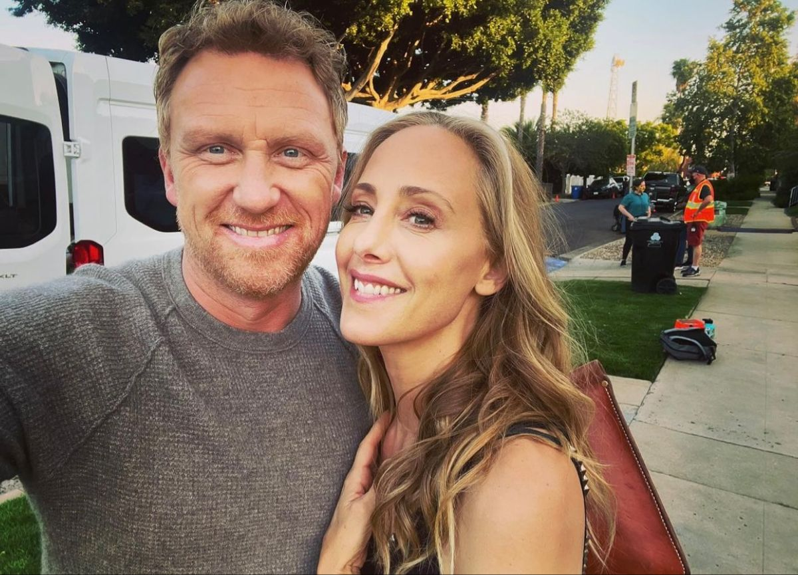
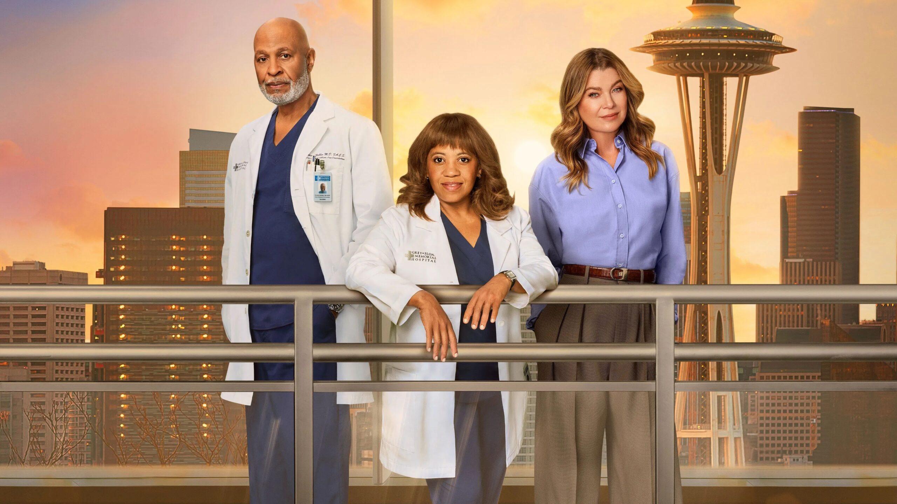

19 FEBRERO, 2026
Novedades
Eric Dane muere a los 53 años
Repasamos la trayectoria del actor que dio vida al querido doctor "McSteamy".
Fallecimiento del actor Eric Dane
El 19 de febrero de 2026, el mundo del espectáculo se conmovió ante el fallecimiento de Eric Dane a los 53 años, debido a complicaciones respiratorias derivadas de la esclerosis lateral amiotrófica (ELA). El recordado intérprete del cirujano Mark Sloan ("McSteamy") había hecho público su diagnóstico de ELA en abril de 2025, dedicando sus últimos meses de vida a visibilizar e impulsar la investigación de esta enfermedad. Sus excompañeros de reparto de Grey's Anatomy y figuras del entretenimiento le rindieron múltiples homenajes.

25 MARZO, 2026
Novedades
Despedida histórica: Owen y Teddy dejan la serie
Dos pilares fundamentales del Grey Sloan Memorial Hospital se despiden al final de la temporada 22.
Salida de Kevin McKidd y Kim Raver al final de la temporada 22
El 25 de marzo de 2026, la cadena ABC y la productora de la serie anunciaron oficialmente la salida de los actores Kevin McKidd (Dr. Owen Hunt) y Kim Raver (Dra. Teddy Altman) al término de la temporada 22. Tras más de una década siendo pilares fundamentales del elenco, el adiós definitivo de sus personajes se concretó en la emisión del capítulo final de la temporada el 7 de mayo de 2026, un episodio que además contó con la particularidad de ser dirigido detrás de cámaras por el propio McKidd.

30 MARZO, 2026
Novedades
¿Qué sabemos sobre la próxima temporada?
Reunimos toda la información sobre lo nuevo que se viene en Grey's Anatomy.
Anuncio y detalles de la temporada 23
El 30 de marzo de 2026, la cadena ABC oficializó la renovación de Grey's Anatomy para su temporada 23, consolidando su título como el drama médico en horario estelar más longevo en la historia de la televisión estadounidense. El 27 de julio de 2026, la productora Shondaland confirmó que la fecha de estreno oficial del primer episodio quedó programada para el 15 de octubre de 2026. A nivel de producción, se reveló que esta entrega contará con la dirección de Debbie Allen para su capítulo debut y que la actual showrunner, Meg Marinis, se mantendrá a la cabeza del equipo creativo.